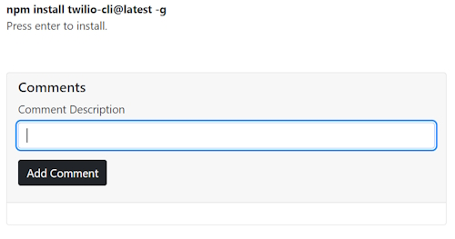
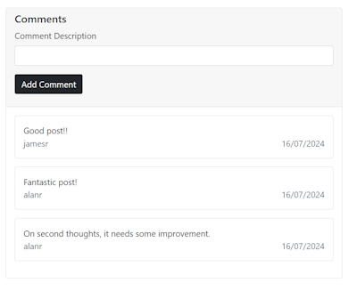

Adding User Functionality with Likes and Comments
Domain Model for Blog Post Likes
Create a new Domain Model named BlogPostLike.
public class BlogPostLike
{
public int Id { get; set; }
public int BlogPostId { get; set; }
public int UserId { get; set; }
}
In the BlogPost Domain Model add a new navigation property.
public ICollection<BlogPostLike> Likes { get; set; }
In The BlogDbContext.cs file add.
public DbSet<BlogPostLike> BlogPostLike { get; set; }
Do a new migration.
Add-Migration "Add BlogPostLike domain model." -Context BlogDbContext
Now create the Likes table in the database.
Update-Database -Context BlogDbContext
Implement the total Likes on Blog Details
Install Bootstrap icons.
Get bootstrap Icons
Add the CDN link to our _Layout.cshtml page in the header section.
<link rel="stylesheet" href="https://cdn.jsdelivr.net/npm/bootstrap-icons@1.11.3/font/bootstrap-icons.min.css">
We want to use a thumbs up icon on our Details page. Find it on the Icons main page.
<i class="bi bi-hand-thumbs-up"></i>
Add it to a new Div on our page. We will add a number of likes.
<div class="mb-3">
<span><i class="bi bi-hand-thumbs-up"></i> 60 likes</span>
</div>
It looks like this.

There are a number of things we need to do.
- Make the icon into a workable button to collect the
clickevent. - Get the number of likes from the database
- Save the collected like to the database
Now in the Code Behind class we will get the number of likes for an article from the database. First we need to create a IBlogPostLikeRepository interface in the Repository and an implementation class LikeRepository.
Add our first method into our IBlogPostLikeRepository interface.
public interface IBlogPostLikeRepository
{
Task<int> GetPostTotalLikes(int blogPostId);
}
Create an implementation of our interface method.
We also need a context to the database and to inject the services into our application.
In Program.cs add.
builder.Services.AddScoped<IBlogPostLikeRepository, BlogPostLikeRepository>();
Add your context to the BlogPostLikeRepository constructor and create your method implementation.
private readonly BlogDbContext blogDbContext;
public BlogPostLikeRepository(BlogDbContext blogDbContext)
{
this.blogDbContext = blogDbContext;
}
public async Task<int> GetTotalLikesForBlog(int blogPostId)
{
return await blogDbContext.BlogPostLike.CountAsync(x => x.BlogPostId == blogPostId);
}
We can now use this repository in our BlogPage/Details Code Behind class.
Inject the IBlogPostLikeRepository into our constructor. Add the number of likes for our Blog Post in the OnGet() method.
Create a new public property to store the likes named TotalLikes.
BlogPage/Details.cshtml.cs
private readonly IBlogPostRepository blogPostRepository;
private readonly IBlogPostLikeRepository blogPostLikeRepository;
public int TotalLikes { get; set; }
public BlogPost BlogPost { get; set; }
public DetailsModel(IBlogPostRepository blogPostRepository, IBlogPostLikeRepository blogPostLikeRepository)
{
this.blogPostRepository = blogPostRepository;
this.blogPostLikeRepository = blogPostLikeRepository;
}
public async Task<IActionResult> OnGet(string urlHandle)
{
BlogPost = await blogPostRepository.GetAsync(urlHandle);
if (BlogPost != null)
{
TotalLikes = await likeRepository.GetPostTotalLikes(BlogPost.Id);
}
return Page();
}
We can now use TotalLikes in our Details page.
<span><i class="bi bi-hand-thumbs-up"></i> @Model.TotalLikes likes</span>
This should give us the total number of likes which will be 0 because we haven't added any likes yet.

Adding a like to a Blog Post
We will add an anchor element as a button to our like span.
<span>
<a id="btnLike" style="cursor: pointer">
<i class="bi bi-hand-thumbs-up"></i>
</a>
@Model.TotalLikes likes
</span>
Now we can add some JavaScript to save the click event to write the result to our database. To do this we will create a new Controller named BlogPostLikeController. We will also create a new ViewModel named AddLike.
ViewModel/AddBlogPostLikeRequest.cs
public int BlogPostId { get; set; }
public Guid UserId { get; set; }
BlogPostLikeController.cs
Add an ApiController attribute to state that this Controller doesn't have any views.
Add a route for api/blogpostlike.
[ApiController]
[Route("api/[controller]")]
public class BlogPostLikeController : Controller
{
[Route("Add")]
[HttpPost]
public Task<IActionResult> AddLike([FromBody] AddLike addLike)
{
}
}
After doing this our route will be, api/blogpostlike/add.
At this stage we will have to add a new method named AddLikeForBlog to our BlogPostLikeRepository.
public async Task AddLikeForBlog(int blogPostId, Guid userId)
{
var like = new BlogPostLike
{
BlogPostId = blogPostId,
UserId = userId
};
await blogDbContext.BlogPostLike.AddAsync(like);
await blogDbContext.SaveChangesAsync();
}
Use this method in BlogPostLikeController.
[Route("Add")]
[HttpPost]
public async Task<IActionResult> AddLike([FromBody] AddBlogPostLikeRequest addLike)
{
await likeRepository.AddLikeForBlog(addLike.BlogPostId, addLike.UserId);
return Ok();
}
We are now at the stage of writing JavaScript using a Fetch command to add our Like to the database.
Our thumb icon has a button click with an Id of btnLike. We create an addEventListener to capture this click.
Getting the BlogPostId is easy as it comes from our model.
To get the userId we have to inject the UserManager from Identity. We can do this by adding the following into Details.cshtml.
@using Microsoft.AspNetCore.Identity
@inject UserManager<IdentityUser> userManager
This is the JavaScript we need to add a Like.
@section Scripts {
<script>
const btnLike = document.getElementById('btnLike');
async function addLikeForBlog() {
console.log(`blogPostId: {@Model.BlogPost.Id}`);
console.log(`userId: {@userManager.GetUserId(User)}`);
fetch('/api/blogpostlike/add', {
method: 'POST',
headers: {
'Content-Type': 'application/json',
'Accept': '*/*'
},
body: JSON.stringify({ blogPostId: '@Model.BlogPost.Id', userId: '@userManager.GetUserId(User)' })
})
.then(console.log('Request finished.'));
}
btnLike.addEventListener('click', addLikeForBlog);
</script>
}
We are now ready to test that we can add a button click into the BlogPostLike table.
Once we click it won't update the counter but if you refresh the page it will work. We'll fix this next.

More functionality for the Like button
First delete all records in the BlogPostLike table. We want to get rid of duplicates.
Add a Like to the first Blog Post.
Now we will write code to stop duplicates.
In the BlogPostLikeController.cs controller add.
[HttpGet]
[Route("{blogPostId:int}/totalLikes")]
public async Task<IActionResult> GetTotalLikes([FromRoute] int BlogPostId)
{
var totalLikes = await likeRepository.GetTotalLikesForBlog(BlogPostId);
return Ok(totalLikes);
}
The GetTotalLikesForBlog() repository method already exists.
Now in Details.cshtml we will modify the JavaScript code.
Change the .then() code to
.then(() => {
btnLike.innerHTML = '<i class="bi bi-hand-thumbs-up-fill"></i>';
btnLike.removeEventListener('click', addLikeForBlog);
getTotalLikes();
});
Note: we will write getTotalLikes() next.
The .innerHTML statement makes the thumbs up full colour. The next line removes the addLikeForBlog so that the user can't click twice on adding a like.
We now need to get the total Blog Post likes so we need to create another JavaScript function named getTotalLikes() to retrieve the likes from the Controller method that we just created.
const totalLikesElement = document.getElementById('totalLikes');
async function getTotalLikes() {
fetch('/api/blogpostlike/@Model.BlogPost.Id/totallikes', {
method: 'GET',
headers: {
'Content-Type': 'application/json',
'Accept': '*/*'
}
})
.then(data => data.json())
.then(result => totalLikesElement.innerHTML = result);
}
Change the Likes Div to.
<div class="mb-3">
<span>
<a id="btnLike" style="cursor: pointer">
<i class="bi bi-hand-thumbs-up"></i>
</a>
<span id="totalLikes">@Model.TotalLikes</span> likes
</span>
</di
And we are ready to test.
Select the first Blog Post (This will have 1 like). Click on like again.

You will notice that the like button has been coloured and it has updated the like count to the total likes. If we clicked on the like button again it won't register another like.
If we refreshed the page it will register another like. We will make changes to stop this.
Create a new method in the BlogPostLikeRepository to get a list of Likes for a BlogPostId.
public async Task<IEnumerable<BlogPostLike>> GetLikesForBlog(int blogPostId)
{
return await blogDbContext.BlogPostLike.Where(x => x.BlogPostId == blogPostId).ToListAsync();
}
This will give us a list of Likes for the particular BlogPostId. We can use this in our Details Code Behind class to see if the user has already liked that Blog Post.
In Details.cshtml.cs add the SignInManager and UserManager Identity services.
private readonly SignInManager<IdentityUser> signInManager;
private readonly UserManager<IdentityUser> userManager;
In the OnGet() method.
if (BlogPost != null)
{
if (signInManager.IsSignedIn(User))
{
var likes = await likeRepository.GetLikesForBlog(BlogPost.Id);
var userId = userManager.GetUserId(User);
Liked = likes.Any(x => x.UserId == Guid.Parse(userId));
}
TotalLikes = await likeRepository.GetTotalLikesForBlog(BlogPost.Id);
}
First, only signed in users will be able to Like a Blog Post.
Then we get a list of Likes for a Blog Post. Next we get the userId for the signed in user.
We then check to see if the userId is in the list of Likes. We create a boolean property named Liked that records the result.
In the Details Razor page inject the SignInManager and UserManager services.
@inject UserManager<IdentityUser> userManager
@inject SignInManager<IdentityUser> signInManager
Change the code in the Likes Div.
<div class="mb-3">
<span>
@if (signInManager.IsSignedIn(User))
{
@if (Model.Liked)
{
<a style="cursor: pointer">
<i class="bi bi-hand-thumbs-up-fill"></i>
</a>
}
else
{
<a id="btnLike" style="cursor: pointer">
<i class="bi bi-hand-thumbs-up"></i>
</a>
}
}
<span id="totalLikes">@Model.TotalLikes</span> likes
</span>
</div>
Inside the span we will check if the user is signed in. If they aren't then they won't see the thumbs up icon so can't like the Blog Post. They will see the number of Likes count.
If you are signed in the thumbs up icon will appear. If you have already liked this post you will see a black thumb else you will be able to like the post.
Create Domain Model for Blog Post comments
In Models/Domain add the BlogPostComment model.
public class BlogPostComment
{
public Guid Id { get; set; }
public string Description { get; set; }
public Guid BlogPostId { get; set; }
public Guid UserId { get; set; }
public DateTime DateAdded { get; set; }
}
In the Domain/Model BlogPost model add an ICollection for BlogPostComment.
public ICollection<BlogPostComment> Comments { get; set; }
In the BlogDbContext add a DBSet.
public DbSet<BlogPostComment> BlogPostComment { get; set; }
Compile your application and do the migration
Add-Migration "Add BlogPostComment domain model." -Context BlogDbContext
Now update the database.
Update-Database -Context BlogDbContext
You should have a new table named BlogPostComment in your Blog database.
Now we will add a Comment section into our BlogPage/Details Razor page below the Content section.
<div class="card">
<div class="card-header">
<h5>Comments</h5>
@if (signInManager.IsSignedIn(User))
{
<form method="post">
<div class="mb-3">
<label class="form-label">Comment Description</label>
<input type="text" class="form-control" />
</div>
<div class="mb-3">
<button type="submit" class="btn btn-dark">Add Comment</button>
<input type="hidden" asp-for="BlogPostId" />
</div>
</form>
}
</div>
<div class="card-body">
</div>
</div>
We have to be logged in to leave a comment. Run the application to test the comment section.

Now we can add the functionality to get the Comments section working. We'll do this by adding an OnPost() method.
public async Task<IActionResult> OnPost()
{
}
Before we can complete this we will have to add a new Interface class named IBlogPostCommentRepository and its implementation class.
public async Task<BlogPostComment> AddComment(BlogPostComment blogPostComment)
{
await blogDbContext.BlogPostComment.AddAsync(blogPostComment);
await blogDbContext.SaveChangesAsync();
return blogPostComment;
}
This saves the comment to the database.
Before we can use this repository we have to inject the service into the application.
builder.Services.AddScoped<IBlogPostCommentRepository, BlogPostCommentRepository>();
Now back in Details.cshtml.cs.
Inject the IBlogPostCommentRepository service into the constructor and create a private field named commentRepository.
Create a new property.
[BindProperty]
public int BlogPostId { get; set; }
This has to have a two-way binding because we need to use this Id in the OnGet() method and the OnPost() method.
In the OnGet() method we have to give BlogPostId a value.
if (BlogPost != null)
{
BlogPostId = BlogPost.Id;
if (signInManager.IsSignedIn(User))
{
var likes = await likeRepository.GetLikesForBlog(BlogPostId);
var userId = userManager.GetUserId(User);
Liked = likes.Any(x => x.UserId == Guid.Parse(userId));
}
TotalLikes = await likeRepository.GetTotalLikesForBlog(BlogPostId);
}
We will also change BlogPost.Id to BlogPostId in this section.
We will also save the BlogPostId value as a hidden value in the Post Form section of our Details Razor page.
<form method="post">
<div class="mb-3">
<label class="form-label">Comment Description</label>
<input type="text" class="form-control" asp-for="CommentDescription" />
</div>
<div class="mb-3">
<button type="submit" class="btn btn-dark">Add Comment</button>
<input type="hidden" asp-for="BlogPostId" />
</div>
</form>
Create a new property named CommentDescription.
[BindProperty]
public string CommentDescription { get; set; }
We will add this to the Form for the Comment Description input value.
<label class="form-label">Comment Description</label>
<input type="text" class="form-control" asp-for="CommentDescription" />
We can now finish the OnPost() method.
public async Task<IActionResult> OnPost(string urlHandle)
{
if (signInManager.IsSignedIn(User) && !string.IsNullOrWhiteSpace(CommentDescription))
{
var userId = userManager.GetUserId(User);
var comment = new BlogPostComment()
{
BlogPostId = BlogPostId,
Description = CommentDescription,
DateAdded = DateTime.Now,
UserId = Guid.Parse(userId)
};
await commentRepository.AddComment(comment);
}
return RedirectToPage("BlogPage/Details", new { urlHandle = urlHandle });
}
The important part here is that we need to passing as a parameter the string urlHandle. This allows us to redirect back to the OnGet() method so that we can re-get the Blog Post and the Likes values to rebuild the Details page.
This process is a design pattern called POST-REDIRECT-GET(PRG).
The user has to be logged in because we need the UserId when we post the comments to the database.
Note: I made a mistake in this code which compiled but failed in runtime. I had BlogPostId = BlogPost.Id when BlogPost.Id didn't exist in the OnPost() method. I had a 2 way bindable BlogPostId property that I should have been using instead.
Displaying the Comments
we need to create a new method in the BlogPostCommentRepository to get a list of comments for a Blog Post.
public async Task<IEnumerable<BlogPostComment>> GetComments(int blogPostId)
{
return await blogDbContext.BlogPostComment.Where(x => x.BlogPostId == blogPostId).ToListAsync();
}
Now we can use this method in the OnGet() method of the Details.cshtml.cs class.
In the signInManager.IsSignedIn(User) if statement we can get the comments.
Comments = await commentRepository.GetComments(BlogPostId);
We need to create a new Comments List property to use the comments on the Details Razor page.
We can't use the BlogPostComment Domain model for this because we need to use the userId to find the user name for display. We can create a new View Model named BlogComment.
public class BlogComment
{
public string Description { get; set; }
public DateTime DateAdded { get; set; }
public string Username { get; set; }
}
This model uses the Username instead of the UserId and allows us to use the name of the person who created the comment.
Create a private method in Details.cshtml.cs named GetComments().
private async Task GetComments()
{
var blogPostComments = await commentRepository.GetComments(BlogPost.Id);
var blogCommentsViewModel = new List<BlogComment>();
foreach (var comment in blogPostComments)
{
blogCommentsViewModel.Add(new BlogComment
{
DateAdded = comment.DateAdded,
Description = comment.Description,
Username = (await userManager.FindByIdAsync(comment.UserId.ToString())).UserName
});
}
Comments = blogCommentsViewModel;
}
This gets the comments from the BlogPostComment list and adds them to a BlogComment list.
Now fill in the card-body Div.
<div class="card-body">
@if (Model.Comments != null && Model.Comments.Any())
{
@foreach (var comment in Model.Comments)
{
<div class="card mb-3">
<div class="card-body">
<div>
@comment.Description
</div>
<div class="d-flex justify-content-between">
<span class="text-secondary">@comment.Username</span>
<span class="text-secondary">@comment.DateAdded.ToShortDateString()</span>
</div>
</div>
</div>
}
}
else
{
<p>No comments.</p>
}
</div>
In the OnGet() method add a call to GetComments() inside the signInManager section of the if block.
if (signInManager.IsSignedIn(User))
{
var likes = await likeRepository.GetLikesForBlog(BlogPostId);
var userId = userManager.GetUserId(User);
Liked = likes.Any(x => x.UserId == Guid.Parse(userId));
await GetComments();
}
This will show a list of Comments if they exist.
Test this out.

If you add a new comment it will resend the page and show the new comment.
Added notes for Removing the last Migration
When I added the Like migration I made a mistake with the migration. I wasn't sure on how I could recover from this issue but it turned out to be fairly simple.
In the list of migrations there was a class named similar to this.
20240713051234_Add Like domain model.cs
This class was created after I ran the migration and updated the database.
There is another class in this folder named BlogDbContextModelSnapshot.cs.
This class keeps a list of all of the models you have created.
It created an Entity.
modelBuilder.Entity("Blog.Models.Domain.Like", b =>
{
b.Property<int>("Id")
.ValueGeneratedOnAdd()
.HasColumnType("int");
SqlServerPropertyBuilderExtensions.UseIdentityColumn(b.Property<int>("Id"));
b.Property<int>("BlogPostId")
.HasColumnType("int");
b.Property<Guid>("UserId")
.HasColumnType("int");
b.HasKey("Id");
b.HasIndex("BlogPostId");
b.ToTable("BlogPostLike");
});
And another Entity.
modelBuilder.Entity("Blog.Models.Domain.Like", b =>
{
b.HasOne("Blog.Models.Domain.BlogPost", null)
.WithMany("Likes")
.HasForeignKey("BlogPostId")
.OnDelete(DeleteBehavior.Cascade)
.IsRequired();
});
The database Table, Like was also created after we ran the Update-Database command.
Rolling back the last Migration
To gracefully rollback I found that you could delete 20240713051234_Add Like domain model.cs.
Also delete the Table Like in the database.
Now you can run this command to remove the migration.
Remove-Migration -Context BlogDbContext
This will remove the last migration and if you look in BlogDbContextModelSnapshot.cs you will see that the last 2 Entities that were described above have been removed.
Now you can fix your Model by renaming it to BlogPostLike.cs. Change the fields to what you want.
Make sure to change the BlogPost Navigation link to.
public ICollection<BlogPostLike> Likes { get; set; }
Change the BlogDbContext to.
public DbSet<BlogPostComment> BlogPostComment { get; set; }
Now you are ready to do the revised Add-Migration.
Add-Migration "Add BlogPostLike domain model." -Context BlogDbContext
Update the database.
Update-Database -Context BlogDbContext
Now you should see the BlogPostLike table in the database. Look at your BlogDbContextModelSnapshot.cs and you should see the 2 new Entities that you just created.
modelBuilder.Entity("Blog.Models.Domain.BlogPostLike", b =>
...
And.
modelBuilder.Entity("Blog.Models.Domain.BlogPostLike", b =>
{
b.HasOne("Blog.Models.Domain.BlogPost", null)
.WithMany("Likes")
.HasForeignKey("BlogPostId")
.OnDelete(DeleteBehavior.Cascade)
.IsRequired();
});
Now your BlogDbContext will be working properly.